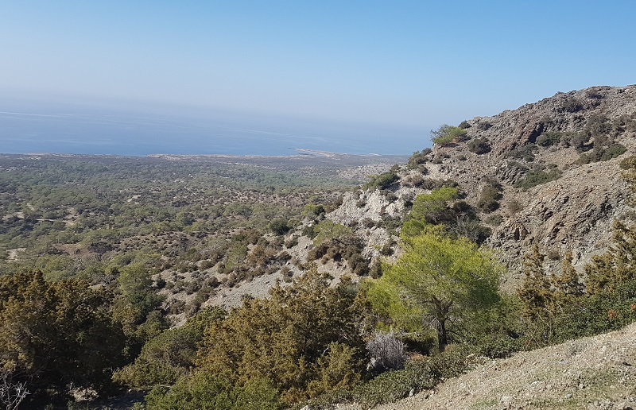
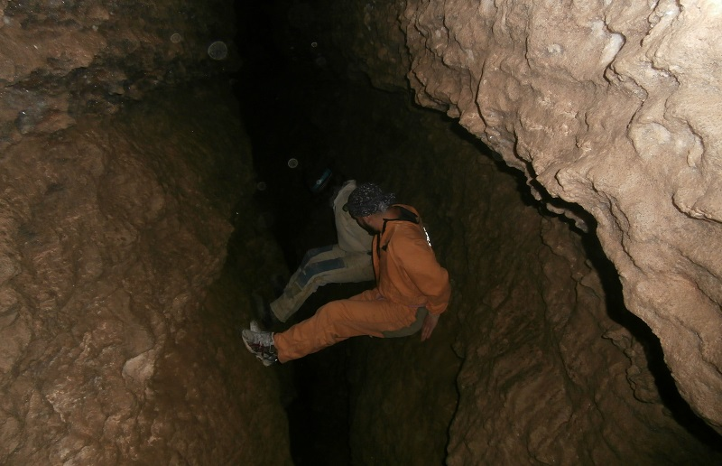
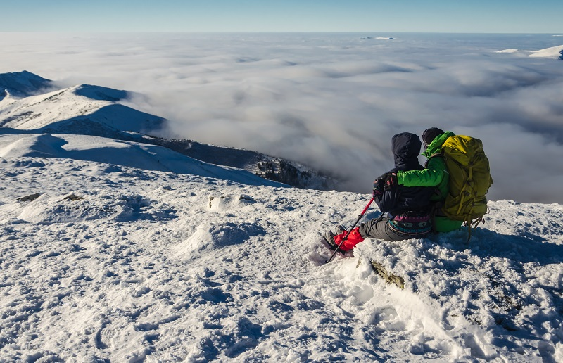
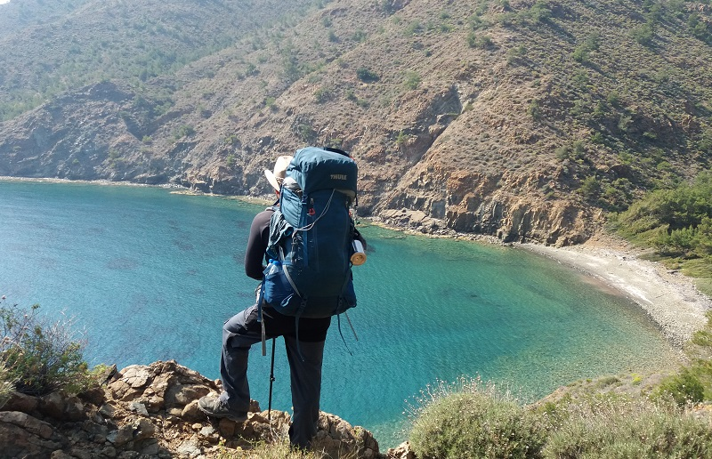
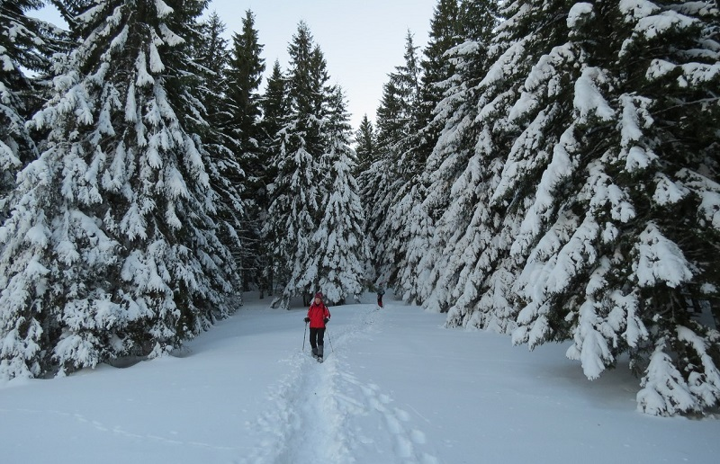
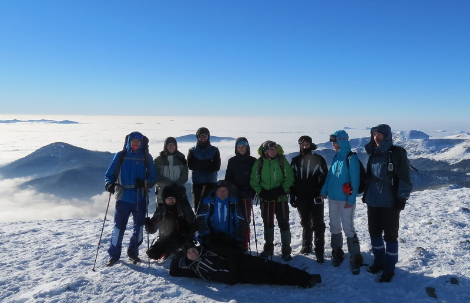
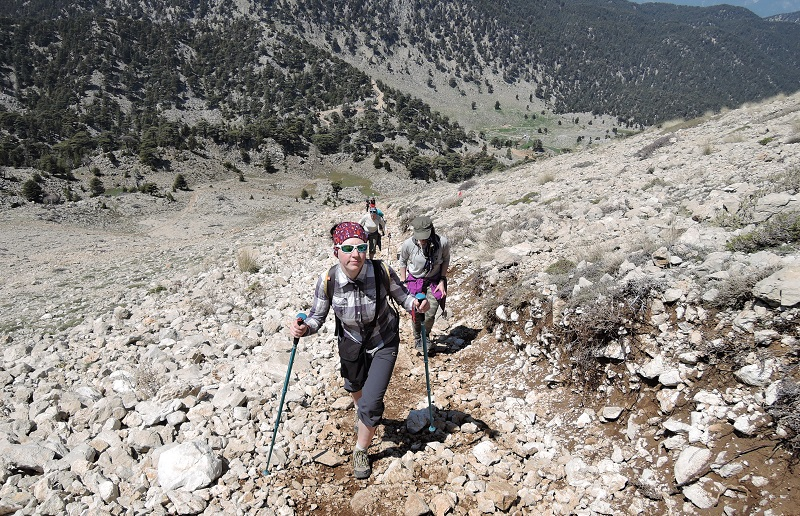

трекінг по Кіпру
заплановано на 10-20 грудня 2018 р.

печерні вихідні у грудні, спелеопохід у Млинки
заплановано на 8-10 листопада 2018 р.

Говерла і Петрос, відкриття зимового сезону
заплановано на 10-20 грудня 2018 р.

Говерла і Петрос в січні
заплановано на 8-10 листопада 2018 р.

тКарпати з комфортом, Хомяк, Синяк, Гук
заплановано на 10-20 грудня 2018 р.

Західна Лікійська стежка, Туреччина
заплановано на 8-10 листопада 2018 р.

східна Лікійська стежка, Туреччина
заплановано на 10-20 грудня 2018 р.